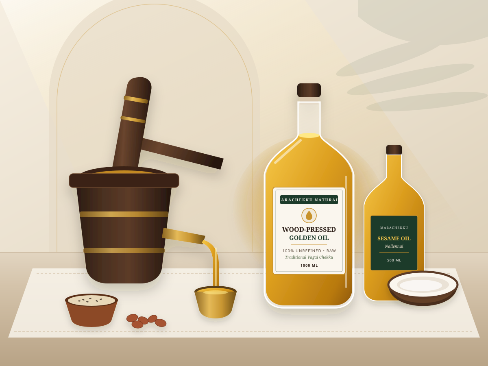

Traditional Extraction Method
Seeds are gently crushed between a seasoned wooden pestle (ulakkai) and mortar (ural) at slow rotational speeds without external heat generation.
Extracted slowly in seasoned vagai-wood chekku presses from sun-dried regional oilseeds. Never heated, never solvent-extracted, and clarified strictly through natural gravity settling and fine cotton cloth straining.

Crushed at slow 14–16 RPM ambient speeds to preserve natural seed aroma.
Unlike industrial refined oils subjected to high-temperature steam deodorising and chemical solvents, wooden chekku extraction keeps the oil close to the raw seed from which it came.
Seeds are gently crushed between a seasoned wooden pestle (ulakkai) and mortar (ural) at slow rotational speeds without external heat generation.
Zero chemical refining, neutralising, bleaching clays, or synthetic anti-foaming agents. The oil flows directly from the wooden press to settling vessels.
Retains the unmistakable roasted-nut bouquet of groundnuts, the earthy depth of palm-jaggery sesame, and the sweet fragrance of sun-dried copra.
Sourced directly from regional dryland harvests, winnowed to remove broken husks, and naturally sun-cured in our courtyard before pressing.
Clarified by 48 to 72 hours of natural gravity sedimentation and strained through unbleached cotton cloth before hygienic glass and tin bottling.
Explore our four primary culinary oils—available in 500 ml and 1 L glass bottles for households, and 5 L & 15 L food-grade tins for bulk kitchens.
Every batch pressed at our mill follows a transparent, unhurried routine designed for households, traditional restaurants, and organic retailers who value ingredient integrity.
Single-variety groundnuts, black gingelly seeds, sulfur-free sun-dried copra, and pungent mustard seeds graded for moisture before pressing.
Pressed in carved vagai-wood mortars that insulate the oilseeds from metal friction heat during crushing.
Every batch is logged with its pressing date, seed lot origin, and visual clarity check after natural sedimentation.
Packed in inert glass bottles for retail shelves and tamper-sealed 5 L & 15 L tins for restaurants, caterers, and wholesale distributors.
A patient, mechanical process that relies on sunlight, seasoned timber, and gravity rather than industrial refineries.
Whole oilseeds are cleaned in woven muram baskets and sieves to remove dust, twigs, and shrivelled kernels.
Seeds and split coconut halves are dried evenly on natural reed mats under warm sunlight for optimal pressing moisture.
Slow pestle rotation crushes the seeds at ambient temperature, channeling golden oil through the wooden spout.
Strained through unbleached gada cotton and rested for 48–72 hours so fine seed particles settle naturally by gravity.
At MARACHEKKU NATURALS, we believe cooking oil should taste and smell like the seed it was pressed from—not a neutralised industrial liquid.
In traditional South Indian kitchens, each dish called for a specific oil: rich Nallennai (sesame oil) for tempering and pickles, nutty groundnut oil for everyday roasting and gravies, and fragrant coconut oil for coastal preparations. Our mill preserves this culinary heritage by operating dedicated wooden chekku presses for each seed variety.
Whether you are ordering a single 1-litre glass bottle for your home kitchen or sourcing 15-litre tins for your restaurant or natural grocery store, every drop comes from the same honest wooden press.